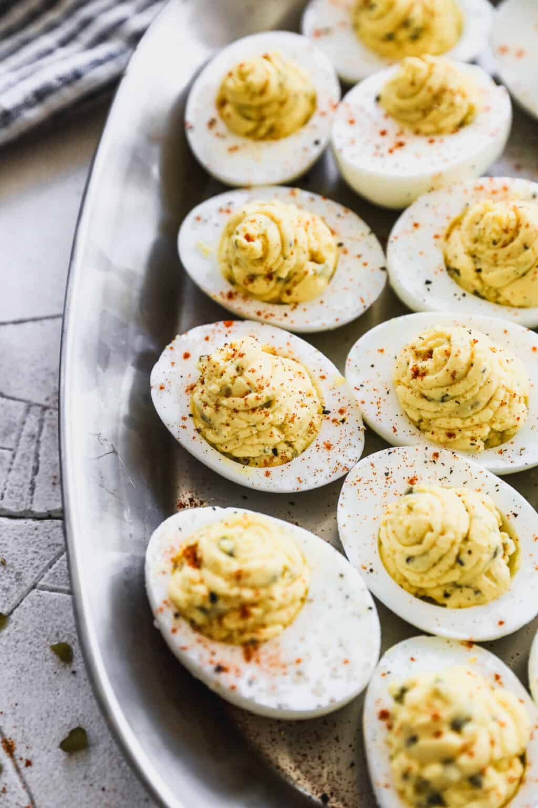

Eggs

Description
This is the recipe for delicious deviled eggs. Make it and be happy.
Ingredients
- 12 large eggs
- 1/3 cup mayonnaise, or use half mayo and half plain Greek yogurt
- 2 Tablespoons pickle relish, or diced dill pickle
- 1 1/2 teaspoons dijon mustard, or yellow mustard
- salt and freshly ground black pepper, to taste
- paprika for garnish
Steps
- Add eggs to a saucepan and cover eggs with cold water. Heat until water comes to a boil. Stir in 1 teaspoon of baking soda (trick for helping the eggs to peel easily), apply lid to cover, and remove from heat. Rest with the lid on for 12 minutes. Remove eggs to an ice water bath to cool.
- Peel and cut eggs: Slice peeled eggs in half, lengthwise. Carefully remove the yellow yolks and place yolks in bowl.
- Filling: To the bowl with the egg yolks add mayonnaise, pickle relish, and mustard. Mash with a fork until smooth. Add salt and pepper, to taste. Add more mayo, mustard, or seasonings to taste, if needed.
- Assemble: Add a big spoonful of filling back into each egg white. Use a spoon, or a pastry bag to pipe the filling in. garnish with paprika or chives, just before serving.
- Store in the fridge for 2-3 days (depending on the freshness of eggs).